Third in the series, after the June master plan (R01–R26, shipped) and the
July alignment program (R27–R33, ratified). Findings here are net-new — cross-checked
against the June appendix and the Track E debt commits. No regressions found on R01–R26.
MethodSimulator walk + source audit
DeviceiPhone 17 Pro · iOS 26.5
Treeaf0f6754
Captures45
Section The diagnosis
The bones are right. The surface keeps breaking trust in them.
One calm home, a marketplace-first funnel, progressive disclosure as the relationship
deepens — the structure is sound. But the surface constantly breaks the user's trust in it:
controls that lie (dead buttons, fake data, wrong tour copy), actions that hide
(gesture-only, tier-hidden, Companion-only), and a dozen names for the same few concepts.
Users hunt because the app keeps changing its story.
45
Live captures from the walk
46
Findings U01 – U46
3
Release-gating U38 · U39 · U40
9
Themes numbered 0 – 8
Law one
Never lie.
Every control does what it looks like it does; every number is real; every promise
("we'll ask for camera access") is kept.
Law two
The next action is visible.
On every screen, the one thing a user most likely wants next is a button they can see —
not a gesture, not a buried menu row, not a Companion-only intent.
Law three
One name per concept.
A concept keeps its name across every surface it appears on.
Theme 0 The two funnel breaks
Two of the product's core promises don't survive the walk.
These were found by walking the running app, then verified against source. They outrank
everything else because they break "scan your room" and "see pieces for your space" outright —
not merely their discoverability.
The non-LiDAR room funnel, walked end to end — shots 20 → 25scroll to the dead end
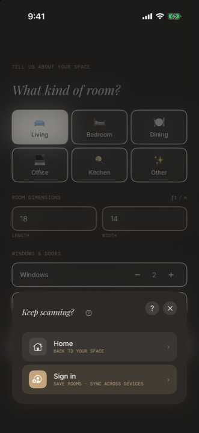
Shot 20Room details. "Start a scan" opens a form, not a camera.
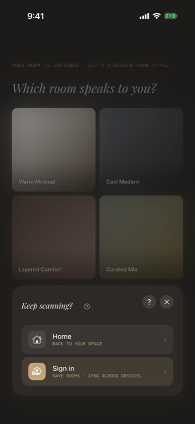
Shot 21Style, question 1. A full five-question conversation begins.
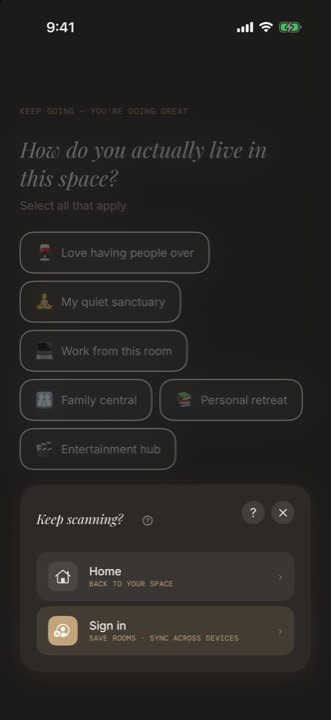
Shot 22Lifestyle. Multi-select; more of the user's work banked.
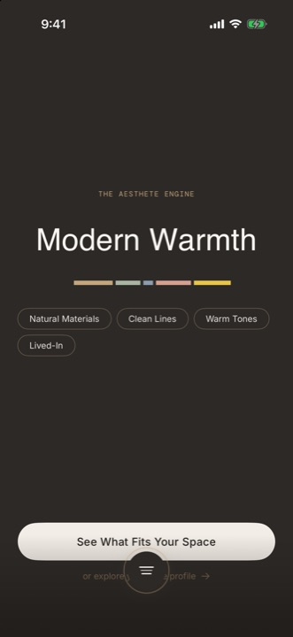
Shot 23The reveal. "Modern Warmth" — a real result, about to be thrown away.
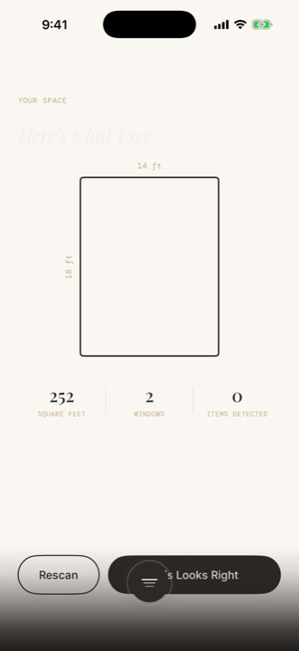
Shot 24"Here's what I see." 252 sq ft. The user taps This Looks Right.
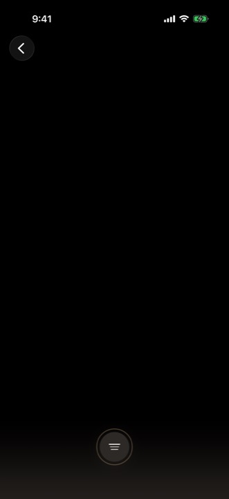
Shot 25Nothing. A blank screen, and home is back to "Scan your first room".
U40U39
──╱ ·
The chain never reaches the save path.
The fallback flow runs .fallback → .conversation → … → .floorPlan and then calls
dismiss(). There is no RoomStore write anywhere along it.
No room persisted
And it dead-ends into the other break.
Shot 25 is blank for a second, independent reason: the marketplace decoder had already
thrown. So the user finishes a five-question room conversation, confirms a floor plan,
loses the room — and lands on an empty grid that reads "0 pieces curated for your
space" while the backend is holding 16 products. Two failures, one screen, no
explanation of either.
The non-LiDAR room funnel silently discards all the user's work.
"Start a scan" → scanFlow forks to the fallback on any device without RoomPlan support
(= every non-Pro iPhone, since RoomCaptureService.isSupported =
RoomCaptureSession.isSupported): room-details form → full 5-question style
conversation → Aesthete reveal → floor-plan review → "This Looks Right" →
dismiss() + navigate to marketplace. No room is ever persisted —
the fallback chain never reaches the save path; home reverts to "Scan your first room"
zero-state. Reproduced twice in sim; code-verified. Meanwhile the other manual path
(NewRoomSheet → ManualRoomEntryView) saves correctly via
RoomStore.
Evidence
walk shots 19–26; QuietConversationFlowHost.swift:190, 285–295; no save anywhere in ScanFallbackEntryView
Fix
Fallback flow persists the room through the same RoomStore path as ManualRoomEntryView, then lands the user on their new room, not the marketplace
fetchRecommendations decodes the RPC response as an all-or-nothing
[Product] array; products.category is unconstrained vocabulary
(local rows carry chair/table/sofa vs the app enum
seating/tables/…), one unrecognized value throws, the catch sets
error — and the view never renders it. Result observed live:
"0 pieces curated for your space" over a blank grid while the backend returned 16
products. Latent in prod (today's 3 products don't trip it; nothing prevents the
next one from doing so). Compounds U40: the screen the room funnel dead-ends into was
itself blank.
Evidence
walk shots 15–16, 25; ProductAPIClient.fetchRecommendations (:67), RecommendationsViewModel.swift:49–58, ProductModel.swift:59, 124
Fix
Per-row tolerant decode (skip bad rows, keep the rest); render the already-set error with retry; align and enforce category vocabulary at the API boundary
Quiz result CTA "View Recommendations" doesn't go to recommendations — it lands on Home.
Evidence
walk shot 09 → 10
Fix
Route it to .emergence — and after U39, that screen will actually show pieces
Supporting captures
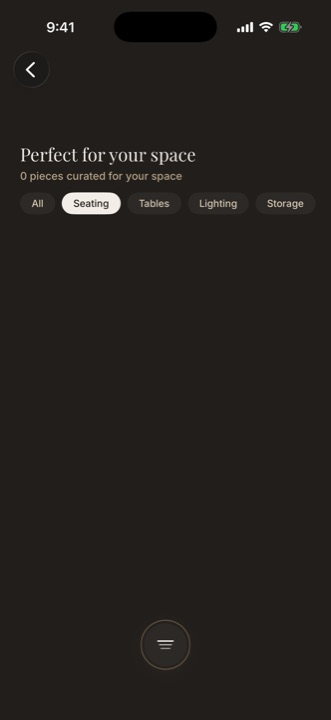
Shot 16Seating filter — still zero, still no message.U39U31
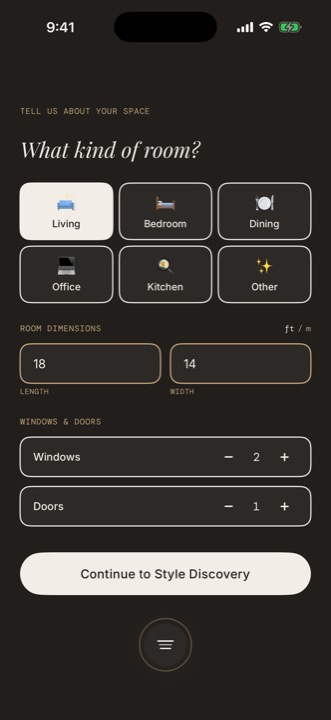
Shot 26The home "Start a scan" CTA lands on the same form. No camera ever opens.U40
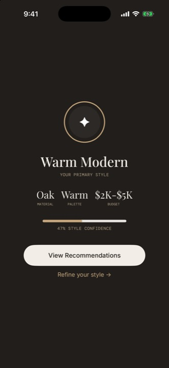
Shot 09"View Recommendations" — the button that goes home instead.U38U43
The walk How users get lost
A first run, in the order it actually happened.
Cold install to signed-in account, captured shot by shot. The markers below are the
capture numbers from the walk, not a narrative device — this is the sequence a new user meets.
01 — 06
The cold start, and the first promise
Splash, welcome, three onboarding cards. The third card says "We'll need your camera" and
the button says "Let's Begin" — but the quiz-first path never asks for camera access.
The app breaks a promise before it has started.
Shot 01Splash — wordmark fade-in.
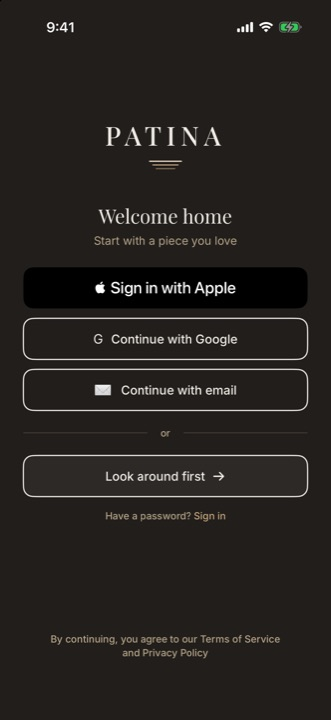
Shot 02Welcome. "Look around first →" is the guest door.
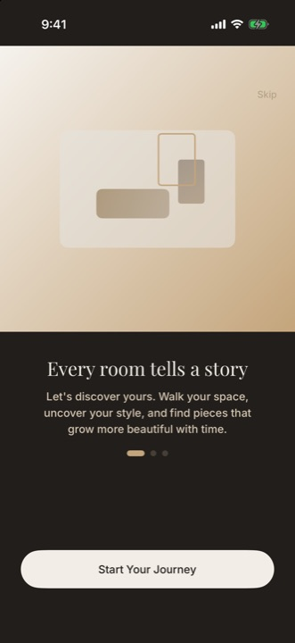
Shot 04"Every room tells a story."
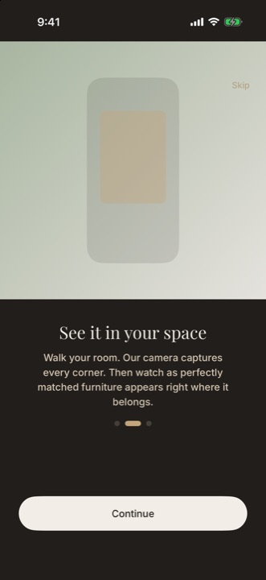
Shot 05"See it in your space."
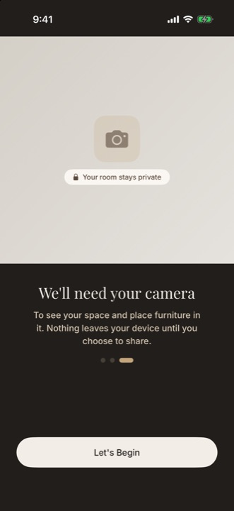
Shot 06"We'll need your camera." It never asks.U33
07 — 09
Five questions, then a number nobody asked for
The style quiz is the strongest thing in the first run — clear, quick, visual. It ends on
"47% Style Confidence", internal model telemetry printed as user copy, at a value low
enough to read as "this didn't work." The result screen also carries a dead "Refine your
style →" link and a CTA that goes to the wrong place.
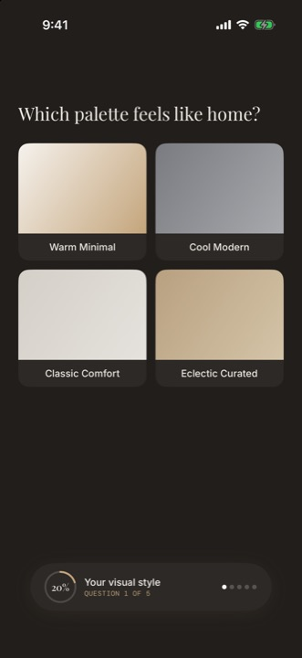
Shot 07Q1/5 — "Which palette feels like home?"
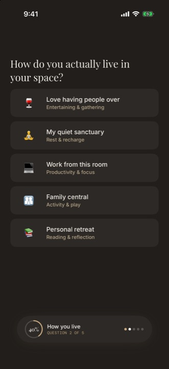
Shot 08Q2/5 — plain language, good pacing.Shot 09"Warm Modern" — and 47% confidence.U43U38U05
10 — 14
Landing on a home that teaches the wrong app
The first-launch tour describes tabs the app does not have ("Today is what's pinned, Saved is
the heart, Profile is settings"), then silently collapses to one step because its
anchors never mount in the zero-room state. The Companion wakes up next — and its panel still
offers "Style quiz — Discover your style" and "Your recommendations — Take the quiz first",
moments after the quiz was completed.
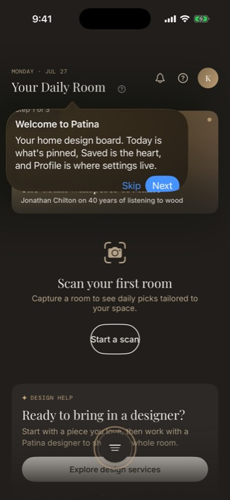
Shot 10"Step 1 of 3" — steps 2 and 3 never appear.U32
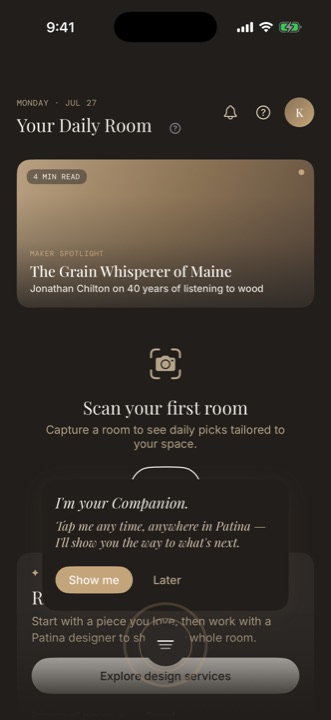
Shot 11The Companion introduces itself. Good moment.U34 ctx
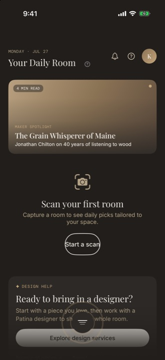
Shot 12Zero-room home. "Browse all pieces →" and "Saved" hide at the safe-area edge.U24U44
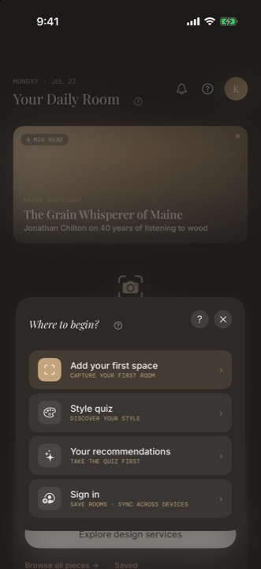
Shot 13"Take the quiz first" — after the quiz.U42U20
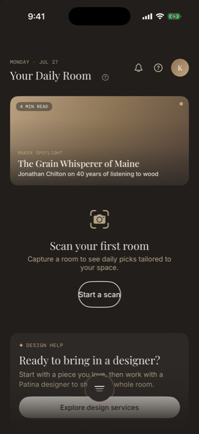
Shot 14The designer pitch — one of twelve names for this flow.U08
15 — 18
The front door, empty
The marketplace is the product's front door, and it is blank (U39). Its title, "Perfect for
your space", doesn't match the link that got the user here ("Browse all pieces →"). The link
labelled Saved opens a screen titled Collections whose first tab is Boards.
Three names, one concept, in two taps.
Shot 15"0 pieces curated" — with 16 products in the backend.U39U09U31
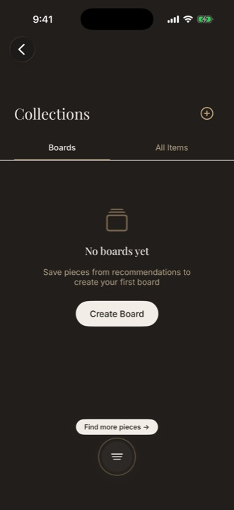
Shot 17Reached from a link labelled "Saved".U09
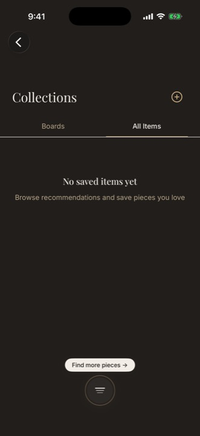
Shot 18"No saved items yet" — and no way to go get one.U31
19 — 26
Trying to add a room
The Companion auto-popped a "Keep scanning?" nudge over the form's own Continue button.
A tap aimed at the Companion's menu row passed straight through and submitted the form
underneath — reproduced twice at identical coordinates, and its ✕ was unresponsive on this
variant. That misfire is how the walk entered the funnel documented in Theme 0.
Shot 19The nudge sits on the Continue button. Taps pass through it.U41Shot 20The funnel begins. See Theme 0 →U40
27 — 34
Asking for a designer instead
The guest notifications screen is the one genuinely good gated empty state in the app —
it says what's missing and offers the action that fixes it. The design-request flow that
follows is well-paced until Review, which prints Scans, Help and Timeline and
silently drops the Budget and Vision the user just typed. Then Send raises an in-flow
auth sheet, an OTP screen, and a failure with the same generic sentence on every retry.
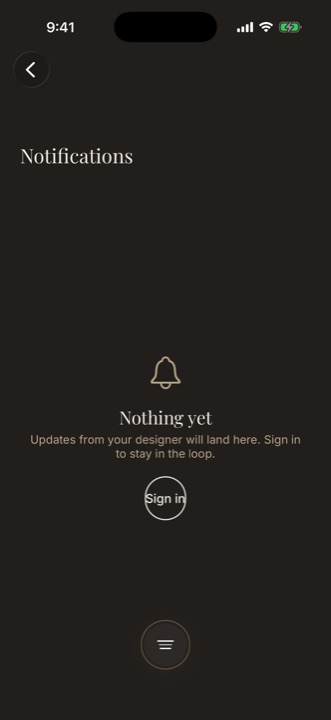
Shot 27The good one: names what's missing, offers the fix.exemplar
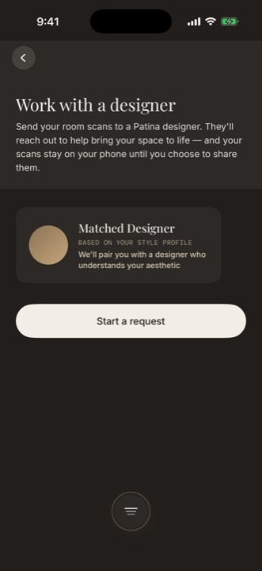
Shot 28"Start a request" — name number two of twelve.U08
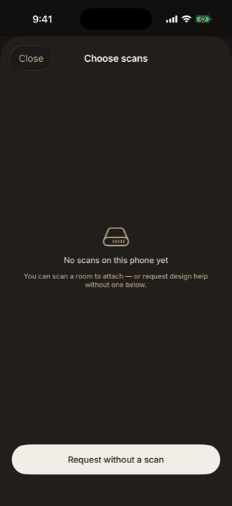
Shot 29Empty state with an exit. Correct.
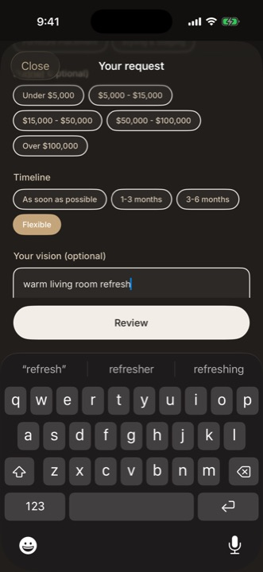
Shot 30Budget and Vision, filled in during the walk.
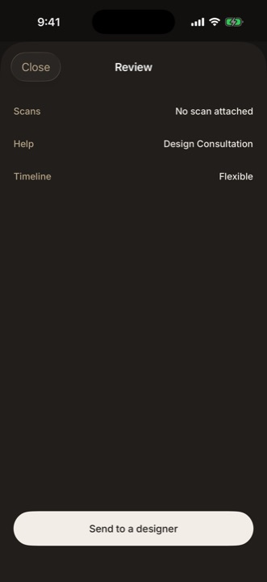
Shot 31Budget and Vision are gone.U46
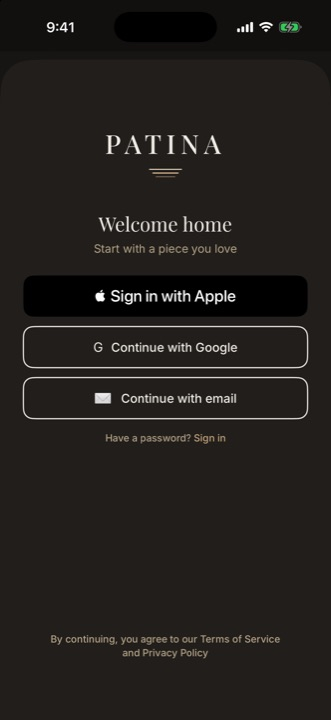
Shot 32Send → auth, in context. This part works.U21 ctx
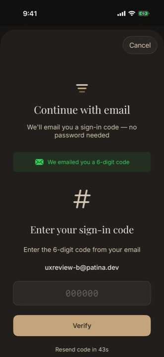
Shot 33Six-digit code.
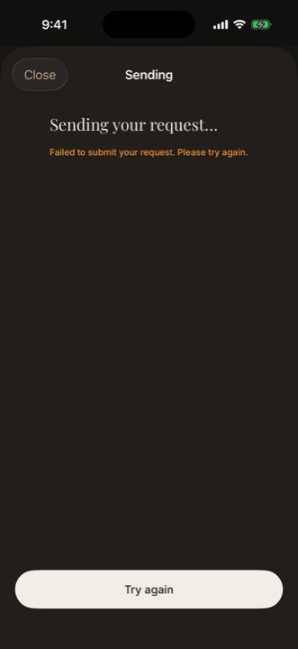
Shot 34"Failed to submit. Please try again." — identical on every retry.U29U30
36 — 39
Coming back
The home resume banner's tap target and its dismiss target nearly coincide, and a dismissed
banner can't be recovered in place. Then, signed in as a seeded active client against a
degraded backend, the home rendered the guest-style discovering layout — Studio gone, sales
pitch shown — with no indication anything was wrong.
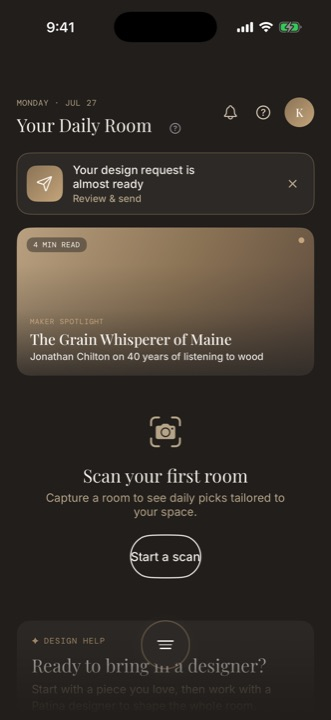
Shot 36Tap and dismiss, a few points apart.U12
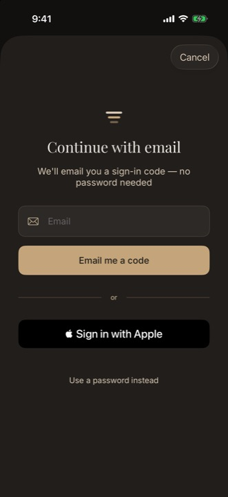
Shot 37"Continue with email".
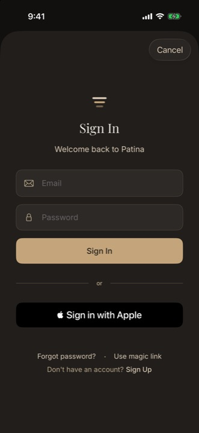
Shot 38Password sign-in.Shot 39An active client, shown the beginner's app.U45
Themes 1 — 7 The findings · live-walk additions U41–U46 · Theme 8 in the appendix
Forty-three more, grouped by the habit that causes them.
Every finding keeps its number, its severity, its effort estimate, and its evidence —
labelled live capture, code-verified or
live + code so the strength of each claim is visible.
P0 = broken promise · P1 = discoverability · P2 = polish.
Theme 1 · P0 clusterHonest chrome: the UI must not lie
The single fastest way to make users "just know what to do" is to make every
visible affordance truthful. Today the home screen alone contains four fabrications.
Home avatar monogram is hardcoded "K" (DailyRoomView.swift:186); Profile's name is
hardcoded "Kody" (ProfileViewModel.swift:25 — every user sees
"Kody", live-confirmed while signed in as client@patina.dev, walk shot 54);
"Member since" renders the current date for everyone
(ProfileViewModel.swift:32–36). Only the Account screen shows the real email.
Evidence
files cited; shots 54 vs 56
Fix
Wire name, initial and join-date from the Supabase profile; guest fallback glyph
"Refine your style →" (StyleResultView.swift:88), "View in AR →" and "See all →"
(inert Text, RoomProjectView.swift:243, 288), the scan ?
(documented no-op, ScanWalkView.swift:44), the toast "View"
(DailyRoomView.swift:76), the "Get Patina Field" row, and the Terms/Privacy
footer non-links in AuthScreenView.
Evidence
per file, as cited
Fix
Wire each or remove it — a dead control is a lesson that controls can't be trusted
"Saved in this room" and "See recommendations for this room" land on the global screens:
.roomSavedItems / .roomEmergence discard roomId in
ContentView.destinationView.
Evidence
ContentView.destinationView
Fix
Honor the roomId, or relabel the rows ("All saved items")
"Explore design services", "Start a request", "Work with a Designer on This Room", "Send to a
designer", "Share with Designer", "Get design help", "Ask a designer", "Work with a
Designer", "Start a new request"…
Evidence
label table in the audit; 12 files
Fix
Two canonical strings: entry CTA "Get design help" everywhere; flow title "Your design request". Room-scoped variants add context, not new verbs ("Get design help with this room")
Saved / Collections / boards / favorites / "The Table" (the route). And the screen reached
from "Browse all pieces →" is titled "Perfect for your space".
"Saved" is the surface — nav title and every entry label; "Boards" survives only as the organizer tab inside it. The browse screen title matches its entry: "Browse pieces"
Reveal: "Your style, found." Upload: one human line ("Sending your scan — 4 of 13"). Stats: "Match" / "View in AR". Sheet copy in plain language
Evidence · one concept, three names
Shot 17Link says "Saved". Title says "Collections". Tab says "Boards".U09Shot 23"THE AESTHETE ENGINE" — the internal name, shown to a homeowner.U11
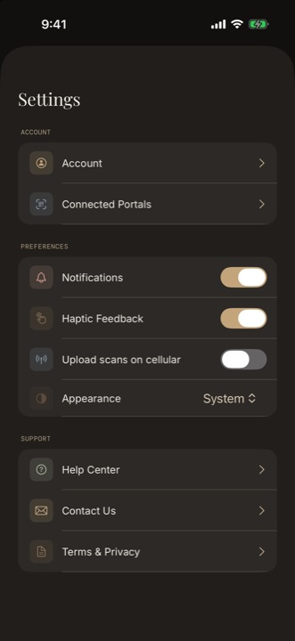
Shot 55"Connected Portals" here; "Sign in to Web" one screen over.U10
Theme 3Buttons look like buttons
Across the app the primary action is frequently a bare tap gesture on a card,
a long-press menu, or a swipe with no affordance. Gestures are accelerators, never the only
path.
ContinueScanCard, DesignRequestStatusCard, DesignRequestResumeBanner, notification rows,
profile room cards, recommendation cards — on several, the only thing that looks
tappable is the dismiss ✕.
Evidence
per-file audit §11.7
Fix
Every tappable card gets a visible affordance — a chevron or a labeled button ("Continue scan", "Review request"); convert to real Buttons for accessibility
EngagementTier is the right model — ruled, and kept. What's missing is the
narration: the app morphs silently, so returning users can't form a stable map of it.
At .discovering, the entire Studio section is EmptyView().
The whole post-engagement world is invisible and unexplained — then appears after
engagement as 3–10 unexplained new rows.
Evidence
StudioHubSection.swift:252
Fix
One quiet locked-state line under the designer CTA: "Your Studio — projects, messages, invoices — opens when you start with a designer." At .engaged, show remaining locked rows greyed with "opens with your first project"
No CTA, and no "what makes this fill" beyond Documents, Invoices and Proposals. Messages
says "Start a project to begin messaging" with no link to do that.
Evidence
audit §10 table
Fix
Every empty state names its trigger and links to the action that causes it ("Your designer's proposals will land here — track your request →")
.discovering users have no home-surface path to the Your Spaces overview.
It exists only in the Companion and on Profile.
Evidence
audit §4
Fix
"Your rooms" always reachable from home — e.g. a trailing "All rooms" chip on the rail, or a row above the designer CTA once rooms exist
Evidence · terminal vs. exemplary empty states
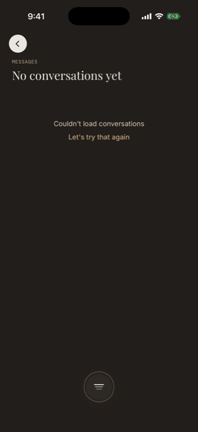
Shot 49Messages: terminal. Nothing to tap, nothing to learn.U22Shot 27The exemplar: names the trigger, offers the action. Copy the pattern.exemplar
Theme 5Saved and Browse need a permanent home
The marketplace is the product's front door. It cannot be tier-gated away —
and today the one text link to it disappears exactly when the user becomes more valuable.
Saved is reachable only via a small text link that disappears when the user engages.
Its three entrances are a text link inside the discovering-tier CTA card, the Companion, or
a product's board — and the text link vanishes at .engaged
(WorkWithDesignerCTA unmounts; the Studio rail has no Saved or Browse row).
Evidence
WorkWithDesignerCTA, StudioHubSection row list
Fix
Add Saved and Browse pieces as permanent rows or affordances at every tier — Studio rail rows, or persistent header affordances
Evidence for the R29 post-Track-D clause — recorded, not re-litigated.
The two most-used retail destinations (Browse, Saved) and the home are exactly the three
stable destinations a tab bar would pin. This walk's data should be tabled when the
Track D review happens. Nothing in this review proposes changing the ruled
navigation model.
Evidence
rulings map
Fix
No action now; carry as evidence into the already-scheduled tab-bar re-evaluation
Evidence · the front door, at the bottom edge
Shot 12"Browse all pieces →" and "Saved" — low contrast, at the safe-area edge, and gone entirely one tier later.U24U44
Theme 6Every wait and failure speaks
Several errors in this app are set on a property the view never reads.
The user taps, nothing happens, and there is no way to tell a slow network from a lost edit.
Recommendations (viewModel.error unread → silent empty grid), story fetch, feed
fetch, the help panel (error → "No help articles yet"), and the saved-item remote mirror.
Evidence
per-file audit, "silent failures"
Fix
Render every set error with the app's existing "Let's try that again" pattern
Recommendations has none at all ("0 pieces curated" over a blank grid), Collections
All-Items has no CTA, CrossRoom has none, "Room not found" is bare text, and a board shows
a grey "Empty board" rectangle.
Evidence
per file
Fix
Every empty state: what this is, and the one action that fills it
Evidence · five Studio surfaces, five identical dead ends
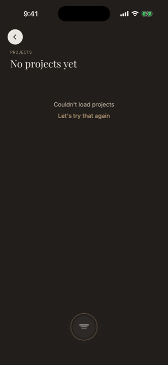
Shot 42Projects.U22U31
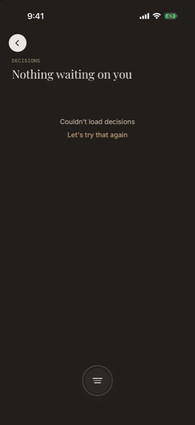
Shot 47Decisions.U31
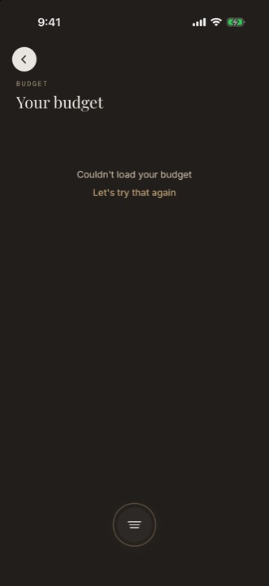
Shot 51Budget.U30
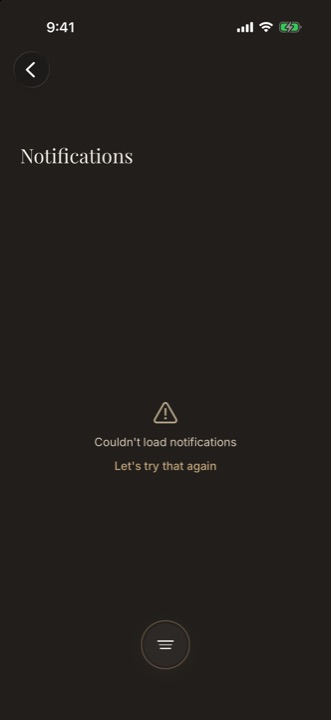
Shot 53Notifications — compare with shot 27, the guest version that does this well.U29Shot 18All Items — no CTA.U31Shot 34The same sentence on every retry, with no escalation.U29U30
Theme 7Fix the first five minutes
The onboarding promises a camera it never opens, and the tour teaches a
tab-based UI that does not exist. The app's first two teaching moments are both wrong.
First-launch tour teaches a UI that doesn't exist.
"Today is what's pinned, Saved is the heart, Profile is settings" — no tabs exist. Step 2
anchors a "tap the heart" tip on a card with no heart (only "+ Add"), and
steps silently vanish when their anchors don't mount. Live-confirmed: only step 1 showed in
the zero-room state.
Evidence
FirstLaunchTour.swift fallback copy; DailyProductCard.swift:136; walk shot 10
Fix
Rewrite the three steps around the real model: (1) your Daily Room, (2) the Companion is how you move, (3) save with + Add. Never skip silently — collapse to fewer, valid steps
The app's sole navigation surface is an unlabeled abstract glyph.
The design already concedes the discovery failure — there is a 20-second stuck-user
escalation poll. Within the R29 ruling: make the chosen model legible, don't replace
it.
The reveal screen's secondary CTA routes to the same place as the primary.
"or explore your style profile" leads exactly where the primary button leads.
Evidence
RevealView
Fix
Differentiate it, or drop it
Evidence · the first two teaching moments
Shot 06The camera promise the quiz-first path never keeps.U33Shot 10"Step 1 of 3", then silence — steps 2 and 3 never mounted.U32Shot 11The Companion introduces itself well — then goes back to being an unlabeled mark.U34
Live-walk additions · U41 — U46Only findable by using it
These six came out of the running app, not the source tree. Two of them —
a touch-through bug and a silent tier demotion — no amount of code reading would have
surfaced.
The auto-popped "Keep scanning?" nudge overlaps bottom-area content CTAs (~y 670–730). A tap
aimed at the Companion's own menu row passed through and submitted the form
underneath. Its ✕ was unresponsive on this variant (fine on "Where to begin?").
Reproduced twice at identical coordinates.
Evidence
walk shot 19
Fix
Companion surfaces must consume their own hits (proper hit-testing and z-order); never auto-pop a nudge overlapping an active CTA
Immediately after completing the style quiz, the panel still offers "Style quiz — Discover
your style" and "Your recommendations — Take the quiz first".
Evidence
walk shot 13
Fix
Recompute panel rows from live state on every open
EngagementTier.current reads live badge counts with no loading or error
distinction; on a cold launch counts start at 0 and resolve() returns
.discovering until fetches succeed. Live-captured: signed in as the seeded
active client with the local backend degraded, home rendered the guest-style
discovering layout — Studio gone, "Ready to bring in a designer?" pitch shown — with zero
indication of a problem. (BadgeCountService keeps stale counts only within a
process lifetime.)
Evidence
walk shot 39; EngagementTier.swift:44–58, 68–82; BadgeCountService.swift:60–105
Fix
Gate bottomSection on BadgeCountService.hasLoaded: skeleton until known, error state and retry on failure — never a silent demotion to the sales pitch
The design-request Review step omits what the user wrote.
The summary shows Scans, Help and Timeline but silently drops Budget and
Vision — the user cannot confirm their own words before sending.
Evidence
walk shots 30–31; DesignRequestFlowView+Steps.swift review step
Fix
Review shows every field being sent, verbatim
Evidence · what the walk added
Shot 19The nudge over the Continue button.U41Shot 13Stale rows, seconds after the quiz.U42Shot 30Budget and Vision, entered.U46Shot 31Review. Both are gone.U46Shot 39An active client, silently demoted to the beginner's home.U45
The walk also confirmed four code-audit items live:
the first-launch tour did silently collapse (only step 1 showed in the zero-room state — U32);
"Start a scan" leads to a form, never a camera, on all non-LiDAR hardware (folds into U40's fix —
the CTA label must match what the device will actually do); repeated design-request send failures
show identical generic copy with no escalation (supports U29 and U30); and the home resume
banner's tap and dismiss are near-coincident targets, with a dismissed banner unrecoverable in
place (supports U12).
Plan The order to fix them in
Three release gates, then eleven days of not lying.
Sequenced by what each phase buys: first the product working at all, then trust, then
visibility, then legibility. Every identifier links to its finding.
Now
Release-gating
The funnel breaks. The product does not work on non-Pro iPhones without U40.
These three ship before anything else in this document.
Every finding above sits inside the decisions already made. Where a ruling constrains
the fix, the fix was written to fit the ruling — not the other way round.
R29
Studio rail / no tab bar
Respected. U24, U25 and U34 make the ruled model legible and table evidence for the
already-scheduled re-evaluation. Nothing here proposes adding a tab bar.
Respected · evidence tabled
EngagementTier
Progressive disclosure
Respected. U19–U23 narrate the tier model rather than flatten it — the morph stays, the silence
around it goes.
Respected · narrated
R32
Deferred backlog
Reviews surface, scope changes, buy-now, GDPR, board fidelity, companion mock removal —
untouched by this review.
Untouched
R106 · clause 6
Arrival Arc
The match ceremony, and the absence of a cancel action on requests — untouched.
Untouched
R01 — R26
June master plan
All shipped. This review found no regressions on those items. The findings here
are net-new, not re-finds — cross-checked against the June appendix and the Track E debt
commits.
Shipped · clean
Appendix Coverage, method, dead weight
What we saw, what we read, and what we didn't.
Walk coverage — stated honestly
Not every finding in this document was witnessed. The evidence chip on each finding says which
kind of claim it is; this is the whole picture behind those chips.
Captured live
The full guest and first-run journey, the quiz, the Companion, the marketplace (empty via
U39), the scan-fallback funnel, the design-request flow through in-flow auth, OTP and submit
failure, sign-out and sign-in, Profile / Settings / Account, Studio list error states,
and the tier-demotion home (U45).
Not captured
Described from code in this deck. The LiDAR scan HUD, review and saved-confirmation
screens — the Simulator has no RoomPlan, so it renders the fallback path instead. The
populated engaged-tier home and request-status screen — the local edge function for lead
submit was absent, and --uitesting resets the auth session on each relaunch. The
populated activeProject Studio surfaces — the local Supabase stack degraded mid-walk with
Docker daemon I/O errors; that failure produced U45's capture instead.
Code only
Flag-gated variants — the walk-first onboarding path — were reviewed from source. Flags fail
closed under --uitesting, so the walk always ran quiz-first.
Retracted
The walk agent's claim that "Profile has no Settings row" was checked and is
false — the row exists at ProfileView.swift:183. It is not a finding and
appears nowhere in this document.
Method
Device
iPhone 17 Pro Simulator
OS
iOS 26.5
Backend
Local Supabase stack
Flags
Failed closed → quiz-first
Captures
45 PNG · 1206 × 2622
Source tree
af0f6754
Every file:line reference in this document was
verified by exploration agents against the working tree at af0f6754. Findings marked
live capture rest on the walk alone; code-verified
on source alone; live + code on both.
Theme 8 — ship less dead weight
Not user-visible, but every dead path is a future regression and a false map for anyone reading
the tree. P2Effort M total
The conversational-Companion setCompanionSheet, CompanionConversationView, QuickActionsBar, ContextBar, InputBar, CompanionAuthPanel
The WalkView v1 stack11 files. Services and Models stay — they power RoomScan
HelpWelcomeModal + HelpCoachmarkSuperseded by the desk-native help system
PreScanChecklistViewPlus its route and Companion menu entry — it shows fake hardcoded green ticks
The .heroFrame EmptyView armA route that renders nothing
Duplicate route aliases.roomList / .roomDetail / .table and their scoped variants — after U06 lands
ItemActionMenu "Find Similar"Routes to the same place as "View Product Detail"
WalkErrorOverlay — salvage firstThe best error copy in the app. Move the copy into the live tracking-loss modal before deleting the file
Glyph-character icons in ItemActionMenuReplace with SF Symbols
Stacked duplicate CTAs in RoomProjectView"Work with a Designer on This Room" + "Send to a designer" → one
ScanReviewView.InternalFlowStep.reviewA documented-dead enum case
Features/Conversation/ModelsModels with no view layer
Cross-reference: docs/maintenance/stale-files-audit.md
§mobile-ios already catalogues most of this. This review seconds it.